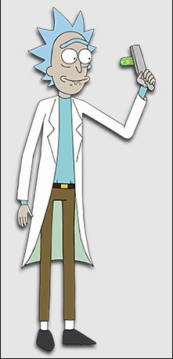

один из двух главных героев, гениальный и немолодой ученый, алкоголик с постоянной отрыжкой. Скептик, крайне циничен, ворчлив, эгоистичен, но не лишён чувства юмора. Атеист (хотя в некоторых сериях даже молится богу, однако, каждый раз после чудесного спасения ссылается на удачу и вновь отвергает его существование). Из-за своей гениальности нажил себе немало врагов во всей Вселенной. Недавно переехал к своей дочери в семью Смитов, с тех пор почти во все путешествия отправляется со своим внуком Морти